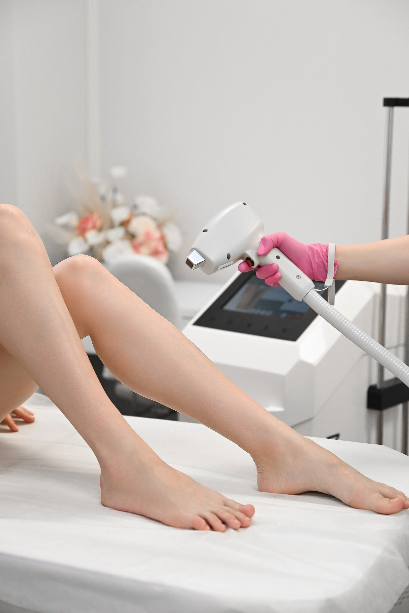

Диодная лазерная эпиляция: основы и нюансы

Проблема роста нежелательных волос очень актуальна для многих женщин и мужчин. Косметология на сегодняшний день предлагает множество способов устранения ненужного оволосения. И очевидно, что многие хотели бы достичь как можно более продолжительного результата, чтобы в конечном итоге затратить на эпиляцию меньше времени и средств. Ни для кого не секрет, что максимально эффективной, безопасной и безболезненной процедурой, позволяющей избавиться от нежелательного волосяного покрова, является диодная лазерная эпиляция. Существуют различные аппараты, работающие на основе данного принципа. Они отличаются параметрами лазерного излучения, качеством и комфортностью применения. В студии лазерной эпиляции «Мой секрет» процедуры проводятся на аппарате MagicOne компании Мелситек.
Его использование позволяет проводить эпиляцию волос при любой локализации, при любом фототипе кожи и независимо от времени года. Исключение составляют лишь седые, тонкие светлые и рыжие волосы. Для того, чтобы понять, почему есть такое исключение, необходимо разобрать принцип действия диодного лазера. Многие слышали, что существует такой пигмент — меланин. Он содержится в большом количестве в волосах и придает им окраску. Диодный лазер воздействует на меланин, которого довольно много в волосяных фолликулах. В результате энергия лазера поглощается фолликулом, преобразуется в тепло и происходит термодеструкция, то есть тепловое разрушение волоса. В случае, если меланина в волосах содержится мало или он совсем отсутствует — действие лазера не эффективно. Вот почему седым, рыжим, а так же блондинам с тонкими волосами эта процедура не принесет эффекта. Зато во всех остальных случаях диодная лазерная эпиляция дает очень качественный, точно направленный результат.
Существует еще один важный физиологический нюанс, который нужно понимать, прибегая к лазерной эпиляции. Все волосы на нашем теле проходят несколько чередующихся фаз своего развития: фаза активного роста сменяется фазой покоя, после которой наступает фаза выпадения волоса. Все эти периоды не синхронизированы, то есть наши волосы находятся в разной фазе развития. Одни активно растут, а другие, расположенные рядом, возможно уже готовятся выпасть.
Лазерное излучение оказывает максимальное воздействие на молодые, активно растущие волосы, которые составляют примерно 25-30% от общего количества. Этой особенностью определяется необходимость проведения нескольких сеансов лазерной эпиляции для полного удаления всех волос и стойкого результата.
Однако, при качественном проведении процедуры возможно появление эффекта синхронизации фаз роста волос. Те фолликулы, которые были не в фазе анагена, переходят в фазу активного роста за счет прогрева, улучшения кровоснабжения, обменных процессов. Таким образом, уже после первых процедур волос может расти больше, но этого не нужно бояться. Это значит, что процедурой «разбудили» спящие волосы, их удалят и промежуток без волос увеличится.
Теперь давайте поговорим о том, как подготовиться к лазерной эпиляции и о самой процедуре. Накануне, перед эпиляцией необходимо побрить волосы на теле или коротко их постричь, если речь идет о лице. Причем длина волос должна быть не более 1мм для снижения нежелательного, местного перегревания кожи. Сначала осуществляется индивидуальный выбор программы, настройка параметров в зависимости от фототипа кожи и характеристик волоса, после начинается сама процедура, протекающая в комфортных для пациента условиях. Заметьте, сразу после процедуры лазерной обработки видимых изменений в структуре волос не наблюдается. Волосы начинают выпадать с 14 дня после процедуры, чаще это происходит очагами, так как в каждой зоне только определенное количество волос находятся в фазе роста.
Количество сеансов, необходимое для достижения результатов варьируются обычно от 6 до 10. Первые процедуры желательно проводить с интервалом от 3 недель. Далее процедуры проводятся один раз в 4-6 недель. В промежутках между процедурами допускается бритье волос. В первые 2-3 дня после процедуры необходимо исключить: использование скрабов, массаж в зоне обработки, посещение бани, сауны, бассейна. В течении двух недель после эпиляции желательно использовать солнцезащитные средства, если удаление проводилось на открытых участках кожи.
Пара слов о побочных эффектах лазерной эпиляции. В принципе, они не возникают, поскольку в аппарате применяется специальная система охлаждения кожи, она встроена в манипулу, по средствам чего лазерный импульс проникает в кожу сразу после ее охлаждения. Наконечник манипулы охлаждается до температуры -4 градуса, а поверхность кожи при контакте с ним до 18 градусов. Это сводит дискомфорт процедуры к минимуму, но эпиляции без ощущений не бывает. Да, система охлаждения предотвращает резкое повышение температуры в эпидермисе, которое дает боль, но плавное повышение температуры для того, чтобы разрушить волосяной фолликул происходит. И здесь важно получать обратную связь от пациента. Поэтому эпиляция всё же – процедура с ощущениями.
Есть и некоторые противопоказания к лазерной эпиляции:
- сильно загорелая кожа;
- беременность и кормление грудью;
- эпилепсия;
- онкологические заболевания;
- заболевания сердечно-сосудистой системы;
- возраст до полового созревания:
- заболевания кожи;
- фотодерматозы;
- прем лекарственных препаратов, вызывающих фотосенсибилизацию (антибиотики тетрациклинового ряда и ретиноиды)/
Итак, как вы поняли, для достижения стойкого эффекта, одной процедурой не обойтись. Потребуется пройти несколько сеансов, но в связи с тем, что проблема роста нежелательных волос решается буквально на корню, а конечный результат характеризуется продолжительным, стойким эффектом, диодная лазерная эпиляция волос остается самой востребованной среди сотен тысяч женщин и мужчин.